Determining the Certain Times Characters Appear in a Simpsons Episode Using Image Recognition with Convolutional Neural Networks
Mert Bugra Bicak
Department of Computer Engineering
Akdeniz University
Antalya, Turkey
Abstract
In this project the goal will be to use convolutional neural networks and deep learning to build an application that takes in a Simpsons episode and a character as input and returns in what parts of the episode the character appears as output. The use of this application will be making compilation videos of Simpsons characters a lot easier. Instead of scanning through hours of footage in the Simpsons archive to find the scenes of the character of interest, it will now be possible to just choose the character and get what time frame they appear in in the episode.
The application that I have developed for this project works by taking a directory of episodes and a specific character(1 of 18 selectable characters) as input, dividing up each episode video into individual image frames for every 3 seconds of the video and checking each of these images to see if that character is in it. If the prediction for the character in an image is both higher than the other possible 17 characters and also above 0.6, the images is accepted. In the end it gives an output in a grid format that consists of the accepted image thumbnails, the time frame the character appeared, and the episode that the image occurs in. The user can observe the images and see when and what episode the desired character occurs in. It uses a 9 layer convolutional neural network trained up to 70% accuracy that takes in 64x64x3 image inputs and gives 18 outputs, each one signifying the probability of a character. This neural network was trained with a data-set of around 6000 images of 18 Simpsons characters. In this paper, we will observe the development of this application in detail.
Below are the tools and technologies that were used in the development of this project.
I have used the Java programming language and the "Deeplearning4j" framework to build the image classifier network and used JavaFX to build a basic, user friendly GUI for the application. As a starting basis for the deep learning task, I used an image classification example from the Deeplearning4j Github page[1] and built upon it. The loading of the training set and other small tasks were done with the help of this code. The first convolutional neural network featured (Model A) was heavily inspired by the LeNet model neural network. The other one (Model B), which was the one that worked the best and was used for the application, was built and configured by myself.
As the data-set, I used "the Simpsons Characters Data" from the user alexattia in the website www.kaggle.com.[2] This dataset contains many hundreds of pictures each for more than 20 of the characters in the show to train and test the image classifier. Since some of the characters had too few images to get good enough training results, I decided to narrow the number of characters down to 18.
For the the image classification task, I built 2 different convolutional neural network models. They differ in the number of convolutional layers and dense layers and got different results. Below are the basic descriptions for each neural network. e.g. how many layers, activation functions, learning rate, etc. and the filter sizes and stride counts can be observed in their respective diagrams.
This neural network has 6 layers. An input layer, 2 convolutional layers, 2 max pooling layers, a dense layer and the output layer. It uses the RELU function as the activation function in the middle layers and uses the softmax function in the last one. It has a learning rate of 0.001 and momentum of 0.9.
Figure 1:
Diagram for neural network model A
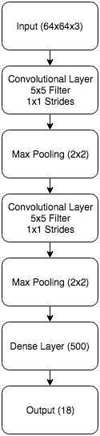 |
This neural network has 10 layers. 1 input layer, 3 convolutional layers, 3 max pooling layers, 2 dense layers and an output layer. The hidden layers of this network use the LEAKYRELU function and the function of the last layer is the softmax function. It has a learning rate of 0.01 and a momentum of 0.9.
Figure 2:
Diagram for neural network model B
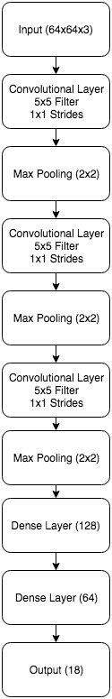 |
Before we move on to the training progress and results for each respective network, let us take a look at the common steps each network takes before and during the training procedure and what class in Deeplearning4j is used for each of them.
- Load all image data along with their labels using the FileSplit class.
- Automatically improve data-set by making necessary eliminations using the BalancedPathFilter class. After doing this, approximately 6000 images were left in the data-set, around 5000 of them being for training and around 1000 being for testing.
- Split the data-set into two, 80% of it being the training set and 20% of it being the test set using the InputSplit class.
- Using the DataNormalization class, we normalize the images into a range of 0 to 1 for smoother learning.
- Next we create a MultiLayerNetwork instance by either creating a new model (one of A or B in this case) or loading one from a file.
- We use the RecordReader and DataSetIterator classes to fetch our training data and make it ready to be iterated through.
- Then for a specific number of epochs(1 traversal through the whole data-set) we train the network using the network.fit(..) method. During training, we get the cost vs. iteration graph and the movement of the parameters across iterations as a UI in localhost:9000.
- After training is done, we load the test set and get the necessary statistics from running the network on this set. Statistics that we will be observing further on in this paper.
- And lastly, we save the network model as a bin file.
It was difficult to get good results with this model. The cost (as seen below) decreased very slowly compared to the number of iterations(1 epoch can be seen as about 170 iterations). Increasing the learning rate also didn't help at all with the accuracy and making further and further iterations until an eventual sweet spot, I was able to reach 56%.
Figure 3:
Cost vs. Iteration graph for model A
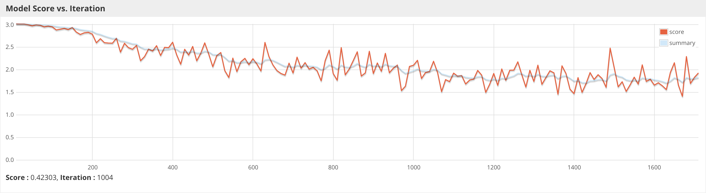 |
Let's now look at the evaluation done by Deeplearning4j in a detailed manner, giving us the accuracy and other useful statistics:
Figure 4:
Test statistics for model A
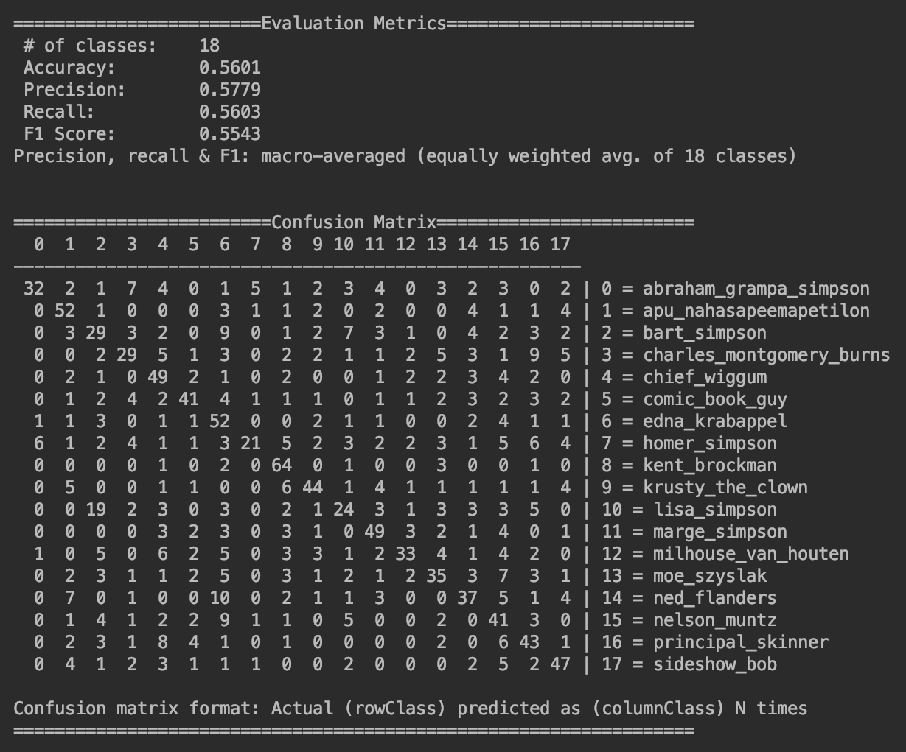 |
Figure 4 gives us the final statistics of predictions done on the test set. This was the best result I could get with this model with the accuracy, precision, recall, and F1 score being around 56%. The confusion matrix gives us how many of which labels were predicted as which labels. The diagonal indexes portray successful predictions and the more we accumulate on the diagonal line, the better our network gets. And we can also observed that the predictions are well balanced. There is no one sidedness whatsoever with the predictions.
After achieving relatively low results with model A and getting a better grasp on the components of the network, I built a new one and got better results. The next figure below is the cost vs. iteration graph of this network after an overnight training session:
Figure 5:
Cost vs. Iteration graph for model B
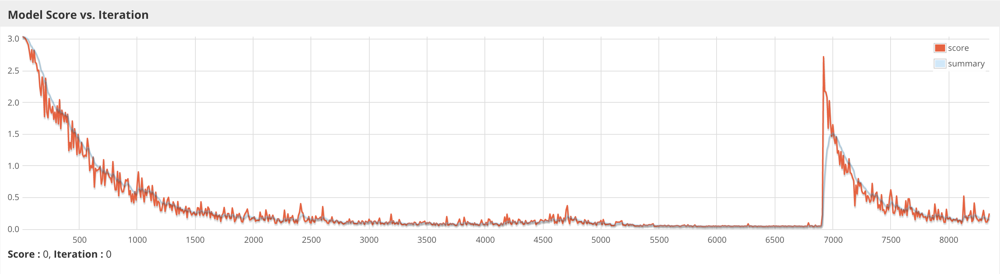 |
As we can see from this graph, it manages to converge to a much smaller cost and the curve of the graph resembles what would be normally expected in training a lot more than the previous model. Though since the training duration was very long, at the end it reiterated itself. But looking at this graph, I did another training run, this time with a more reasonable epoch number and tried to hit a sweet spot. Here is what I managed to obtain:
Figure 6:
Cost vs. Iteration graph for model B
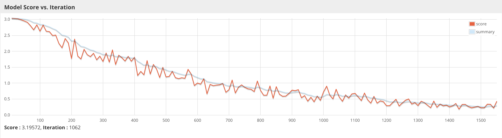 |
After stopping at about 1550 or so iterations, the cost dropped to about 0.25. After this training procedure, the accuracy I obtained had already surpassed model B. In the next figure, we can observe the accuracy and the confusion matrix after this training run.
Figure 7:
Test statistics for model B
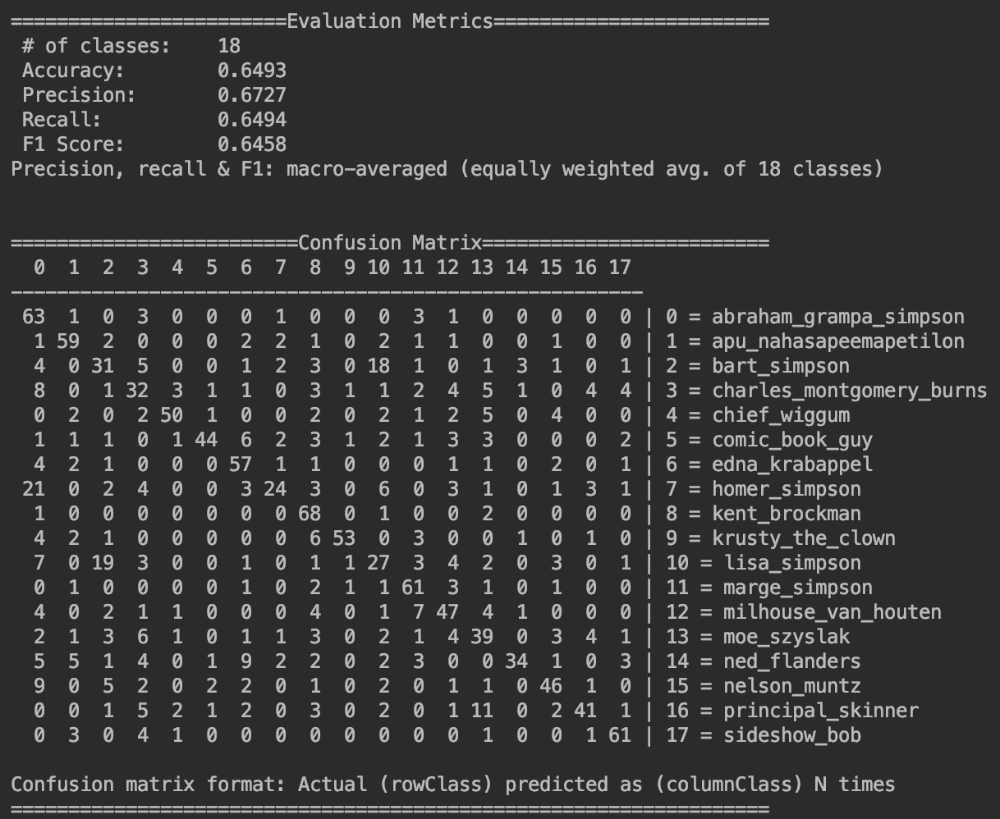 |
As seen in figure 7, the accuracy obtained was close to 65%, 9% better than model B and the accumulation in the diagonal also increased when compared to B. For example, 63 hits for Grandpa Simpson in A compared to 32 in B. Even though the result was relatively better than, there seemed like there as still room for improvement. So I ran 20 to 30 more epochs on the model B network and approach an accuracy very close to 70%. After getting close to 70%, the accuracy of the model started increasing very slowly and due fear of overfitting, I decided to stop at this moment and use this network in my application since 70% seemed like it would be a decent rate for classifying 18 images. Here are the final results and test statistics for model B:
Figure 8:
Test statistics for model B
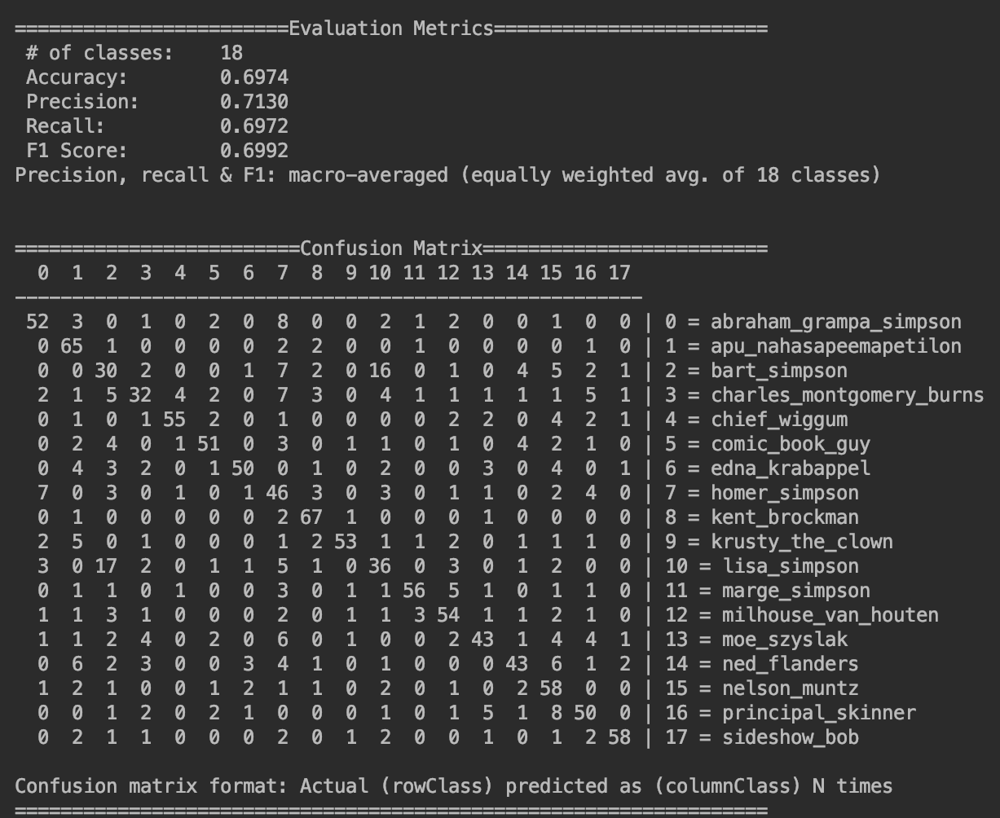 |
Again we notice the improvements compared to the previous run. What I've also noticed is that when looking at the confusion matrix, we can see that Bart and Lisa get mixed up a lot. This might be because they regularly appear together in the show, or simply because they look very similar. They are siblings after all. This might also account for some of the loss in accuracy.
Figure 9:
Bart and Lisa look very similar
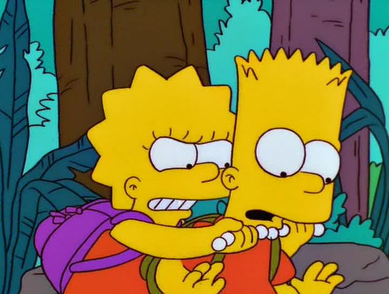 |
Now let's move on to the application itself. After getting a decent hit rate in model B, I developed a nice developed a small, user-friendly application that takes in a directory (of the episodes we want to scan) and a character selection from a drop-down menu as input. Then, the application takes a frame of every 3 seconds from each episode and puts them through the convolutional neural network. It the network predicts the character we are searching for and the prediction value is more than 60%, we accept this image and save it along with the time frame it occurs in and in which episode. I found 60% to be the best threshold since if it were to be higher, even though the images would have a higher chance of actually having the character, there's a chance it would skip a lot of the images where the character appears due to the high threshold. And if it were to be lower, we might get too many images that don't have the character. Finally after going through all the episodes, we show the images we accepted as thumbnails of the images coupled with the necessary information. Now let's take a look at a sample run of the application:
Figure 10:
Select character and episode directory
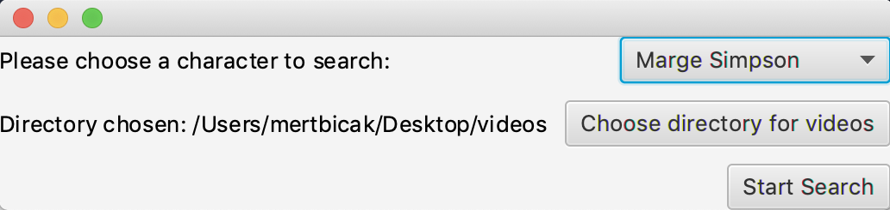 |
Figure 11:
The loading screen while scanning episodes
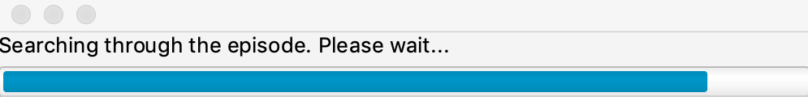 |
Figure 12:
Results after scanning for Marge Simpson
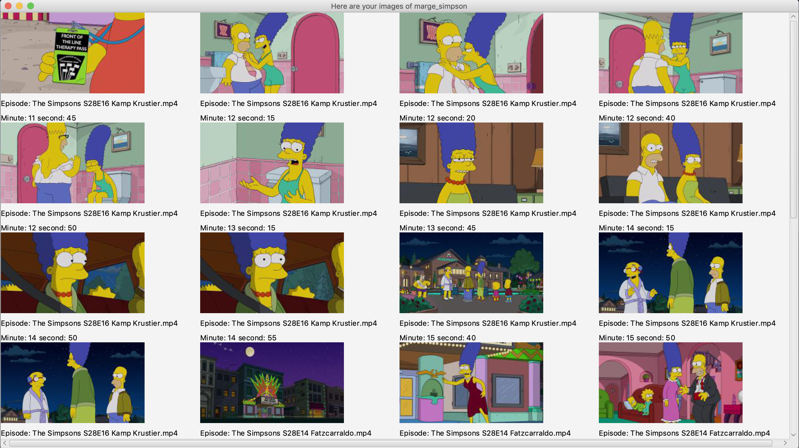 |
In figure 12, we can observe the resulting images along with their time frame and what video they belong to. In this sample run, we searched for Marge Simpson in 3 random Simpsons episodes and got very good results. As seen, only 2 of the first 16 images don't have Marge Simpson in it.
In this paper, we have observed the development process of an application that uses a convolutional neural network to classify images. While doing this, we have seen and compared the structure and performances of two different convolutional neural networks. We have examined the process of learning step by step. We have analyzed cost vs. iteration graphs of these networks along with their statistics on their test sets and took action or made assessments accordingly to get a better accuracy. Lastly we have observed a sample run of the application and saw how it worked. This application was developed for users to be able to quickly get scenes where a character appears while making compilation videos instead of searching through video after video by hand and it seems to give a pretty decent performance. Although there is definitely room for improvement. Maybe with more data or a better network model, a better accuracy could be achieved but due to hardware limitations and the training taking a very long time, a smaller accuracy had to do for now. And the user interface can definitely be better than it is. In the end, we have seen how convolutional neural networks are trained and used for image classification with a practical example.
[1] “AnimalsClassification.java.”, Rahul Raj, June 7 2018, deeplearning4j
- https://github.com/deeplearning4j/dl4j-examples/blob/master/dl4j- examples/src/main/java/org/deeplearning4j/examples/convolution/AnimalsClassification.java
[2] The Simpsons Characters Data, Alexattia, www.kaggle.com/alexattia/the-simpsons-characters-dataset